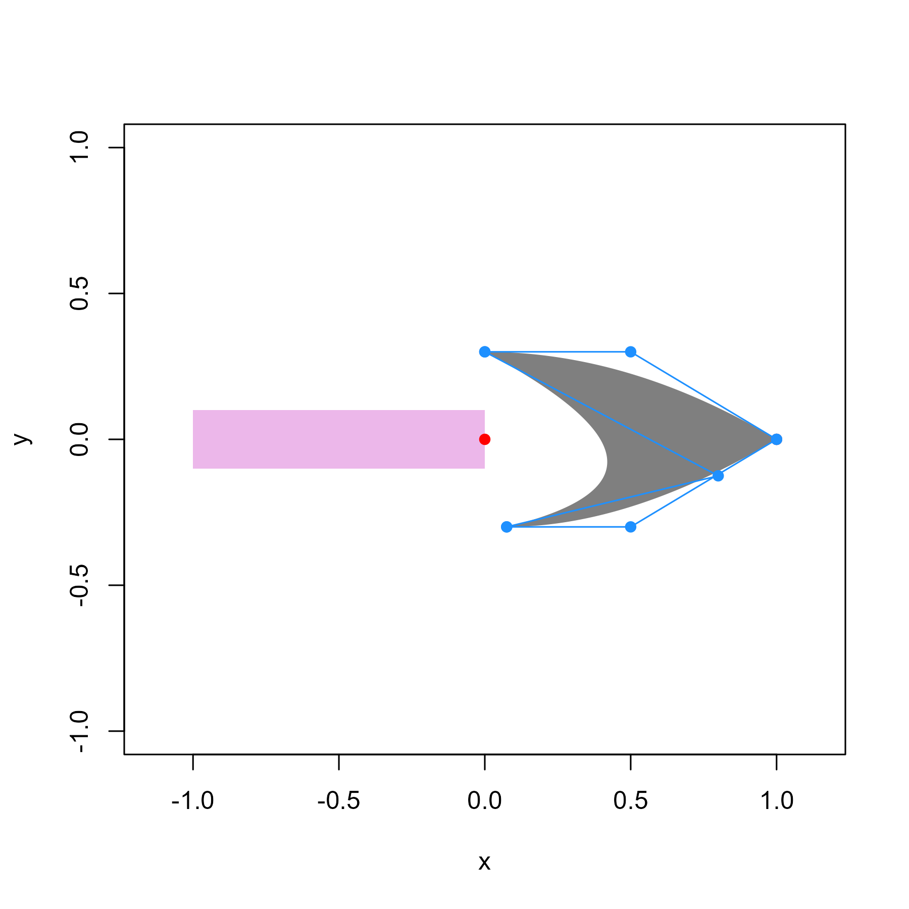
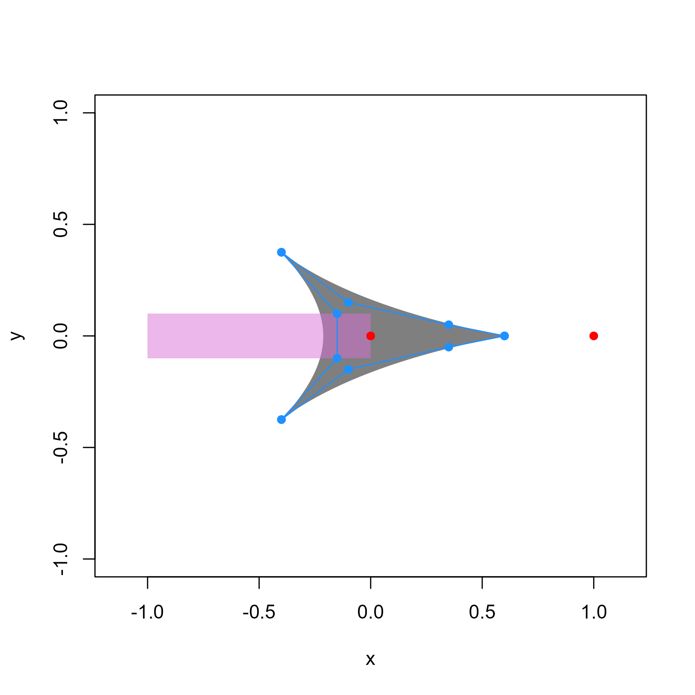
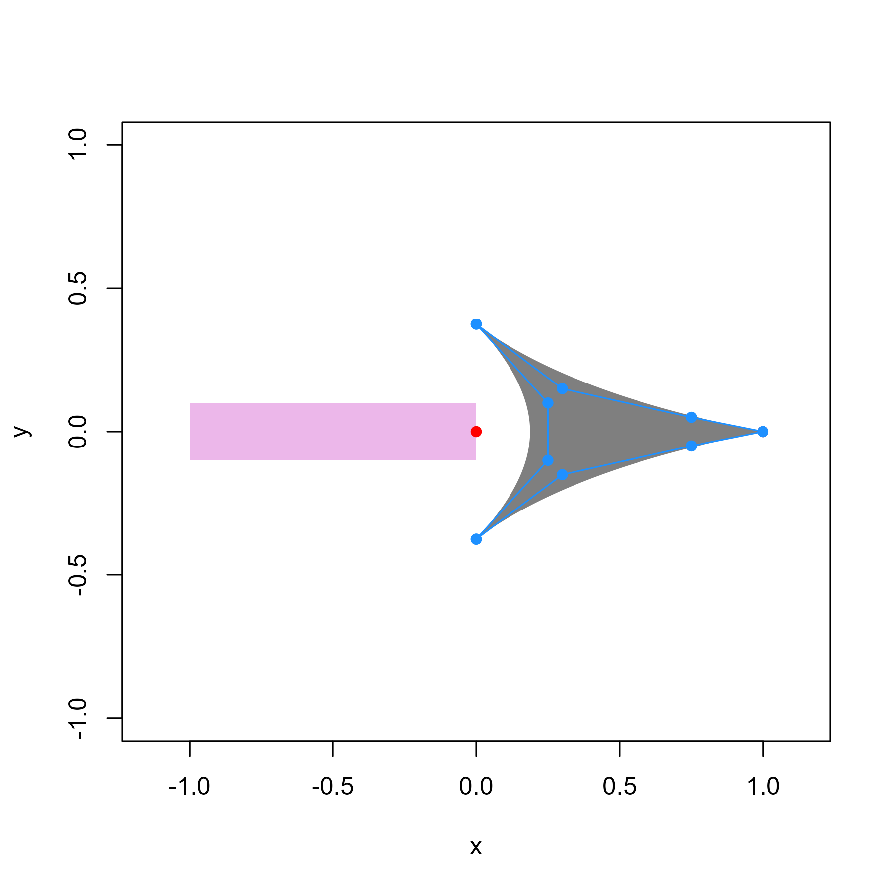
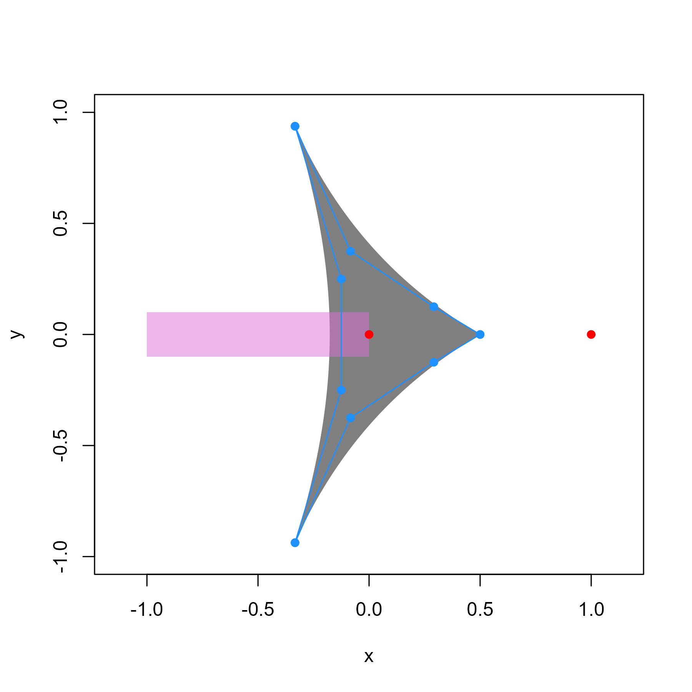
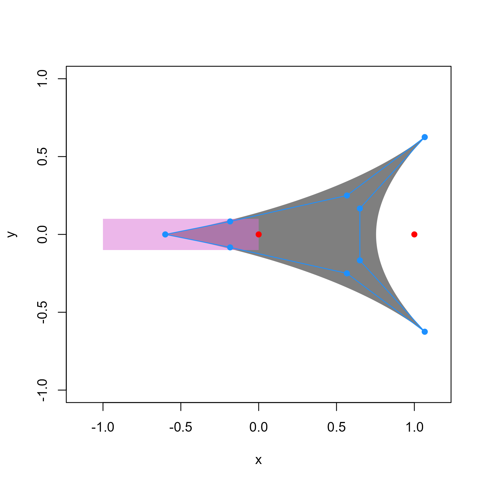

Purpose
The arrowheadr package allows one to create custom arrowheads that can be used with the ggarrow package.
The ggarrow package is fantastic!
Teun van den Brand’s ggarrow package gives us the ability to make great-looking arrows in ggplot2.
library(arrowheadr)
library(ggarrow)
library(ggplot2)
library(ggforce)
library(tibble)
library(dplyr)
# Make simple plot for reuse
base_plot <- data.frame(x = c(0,1), y = c(0,1)) |>
ggplot(aes(x,y)) +
coord_equal()
base_plot +
geom_arrow()I particularly like that the arrow functions can resect the arrows such that I can put a little space between the arrows and they objects they connect.
base_plot +
geom_arrow(resect = 5) +
geom_point(size = 8)You can make your own arrowheads by supplying the arrow_head parameter a 2-column matrix of polygon points. I’ll make a simple triangle:
triangle <- cbind(x = c(1, 0, 0),
y = c(0, .5, -.5))
base_plot +
geom_arrow(arrow_head = triangle)You can make any shape you want. I made arrowheadr to facilitate getting complex shapes into the box that ggarrow functions expect.
The arrowheadr functions do not depend on ggarrow, but were designed to be used with ggarrow. The main arrow_head_* functions return a matrix with columns x and y to create a polygon fitting in a square from −1 to 1 on both the x and y axes.
The main arrow_head_* functions have an optional plot argument to show what polygon will be used:
library(arrowheadr)
my_arrowhead <- arrow_head_deltoid(plot = TRUE)The pink rectangle shows where the arrow’s line will end. The arrowhead’s point is expected to be at (1,0), but you can do anything you want.
We can now use this output with ggarrow:
base_plot +
geom_arrow(arrow_head = my_arrowhead)Examples with ggarrow
I use ggarrow mostly for creating path diagrams. My setup is a bit complicated, but it works for me.
# Set defaults
ggplot2::update_geom_defaults("arrow_segment",
list(
length_head = 5,
linewidth = 1.5,
color = "gray20"
))
ggplot2::update_geom_defaults("text", list(family = "Asap Condensed"))
ggplot2::update_geom_defaults("label", list(family = "Asap Condensed"))
# Names and locations of latent variables
d_latent <- tibble(
x = c(0, .5, 1),
y = c(0, sqrt(3) / 2, 0),
construct = c("A", "B", "C")
)
# Circle size
node_radius <- .15
# Distance from circle to start and end arrows
path_offset <- .03
p_offset <- node_radius + path_offset
# Paths between variables
d_edge <- tibble(
from = c("A", "A", "B"),
to = c("B", "C", "C"),
value = c(".75", ".11", ".90")
) |>
left_join(d_latent |>
rename(
from = construct,
from_x = x,
from_y = y
),
by = join_by(from)) |>
left_join(d_latent |>
rename(to = construct,
to_x = x,
to_y = y),
by = join_by(to)) |>
mutate(
start_x = from_x + p_offset * (to_x - from_x),
end_x = from_x + (1 - p_offset) * (to_x - from_x),
start_y = from_y + p_offset * (to_y - from_y),
end_y = from_y + (1 - p_offset) * (to_y - from_y)
)
# Function to create a plot and replace arrows
mypath <- function(arrow_head = ggarrow::arrow_head_wings(),
node_radius = .15,
path_offset = .03,
...) {
p_offset <- node_radius + path_offset
ggplot(d_edge, aes(
x = start_x,
y = start_y,
xend = end_x,
yend = end_y
)) +
coord_equal() +
theme_void() +
geom_circle(
data = d_latent,
aes(
x0 = x,
y0 = y,
r = node_radius,
fill = construct
),
color = NA,
inherit.aes = FALSE
) +
geom_text(
data = d_latent,
aes(x = x, y = y, label = construct),
size = 18,
inherit.aes = FALSE,
color = "gray20"
) +
theme(legend.position = "none") +
scale_fill_viridis_d(
option = "D",
begin = .2,
end = .8,
alpha = .5
) +
geom_arrow_segment(arrow_head = arrow_head,
...) +
geom_circle(aes(
x0 = from_x + .5 * (to_x - from_x),
y0 = from_y + .5 * (to_y - from_y),
r = .042),
fill = "white",
color = NA) +
geom_text(
aes(
x = from_x + .5 * (to_x - from_x),
y = from_y + .5 * (to_y - from_y),
label = value
),
size = 6,
color = "gray20"
)
}
Skinny Sharp Deltoid
mypath(arrow_head_deltoid(d = 2), length_head = 5)Skinny Rounded Deltoid
mypath(arrow_head_deltoid(d = 2.7))Rounded spade
mypath(arrow_head_deltoid(d = 8))Sharp Barbs
Mimics the latex' arrowhead from tikz.arrows
mypath(arrow_head = arrow_head_latex()) Mimics the regular latex arrowhead from tikz.arrows
mypath(arrow_head = arrow_head_latex(undercontrols = NULL)) Bezier Curves
A list of bezier control points can make almost any shape.
# A list of bezier curve control points
enterprise <- list(
c(1,0,
.5,.3,
0,.3),
c(0, .3,
.80, -.125,
.075,-.3),
c(.075,-.3,
.5,-.3,
1,0)) |>
arrow_head_bezier(plot = T) 
mypath(enterprise, length_head = 10)Nudging
The arrowheads can be nudged in the x and y axes with a length 2 vector. For example, the arrow_head_harpoon function by default is centered on the line, which does not look good.
xy <- arrow_head_harpoon(plot = TRUE)
data.frame(x = c(0, 1), y = c(0, 1)) |>
ggplot(aes(x, y)) +
geom_arrow(arrow_head = xy, length_head = 10) +
coord_equal()Depending on the linewidth and length_head, we can nudge the harpoon downward so that it looks like a harpoon.
mypath(arrow_head_harpoon(nudge = c(0, -.06)), length_head = 12)Rescaling
The arrowheads can be rescaled like so:
xy <- arrow_head_latex(rescale = .6, plot = TRUE)
By combining rescaling with nudging, we can separate the arrowhead from the line:
xy <- arrow_head_latex(rescale = .6,
nudge = c(.4, 0),
plot = TRUE)
mypath(xy, length_head = 7)The rescaling can be different on the x and y dimensions. Here we decrease the width by half and increase the height by half.
xy <- arrow_head_latex(rescale = c(.5, 1.5), plot = TRUE)
Rotating
Here I put the rotated arrowhead into the head and fin of the arrow. The rotation is in radians, not degrees.
xy <- arrow_head_latex(rotate = pi,
nudge = c(.4, 0),
plot = TRUE)
mypath(arrow_head = xy, arrow_fins = xy)Reflecter function
Because most arrowheads are symmetric, we can design one half of the arrowhead and then duplicate the other half in reverse order. The reflector function takes a matrix, reverses the sign of the y values, and reorders the rows, and adds the reflected matrix to the original matrix.
Here, I supply the bezier controls for just the top half of the arrow, the arrow_head_bezier function creates the polygon points for the top half, and the reflecter function adds the mirror image points below to the polygon symmetric.
myarrow <- list(c(1.0, .00,
.65, .25,
.40, .37,
.00, .40),
c(.00, .40,
.00, .00,
-1.0, .00),
c(-1.0, .00)) |>
arrow_head_bezier() |>
reflecter()
plot_arrowhead(myarrow)
mypath(myarrow, length_head = 5)